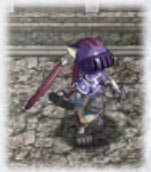

| 概要 | 情報 | ボス戦 |
| 攻略チャート | アイテム一覧 | 敵キャラ一覧 |
| マップ |
| 1 | 2 |
| Name | Image | HP | STR | DEF | LV. | EXP | GOLD | Note | Appearance | Memo |
| ゾルミ | 352 | 154 | 150 | 25 | 223 | 28 | トゲのついた葉っぱらしきものをブーメランのように飛ばしてくる。 植物のようだが、何かが擬態している可能性も。食べると意外に美味しいという噂。 |
エルダーム山脈 | 本体を倒しても葉っぱでダメージを受けることもあり | |
| パシュハウ | 228 | 151 | 129 | 25 | 227 | 3 | 獣人族。いつもビクビクとこちらの様子を伺っていて、隙あらば飛びかかってくる。 ヘルメットの下の素顔は猫のように見えるが、本人は虎だと言い張っている。 |
エルダーム山脈 | ||
| イルバ(装甲体) |  |
288 | 165 | 157 | 27 | 233 | 26 | 岩石の集合体。地面から突然現れて氷柱を放ってくる。 見た目のとおり、かなり硬いので、剣での攻撃はほとんど効果がない。 |
エルダーム山脈(後半) | 火の魔法、地の魔法が有効 地の魔法で倒すと、イルバ(眼核)として襲いかかってくる |
| イルバ(眼核) | 192 | 171 | 93 | 28 | 241 | 10 | 岩石のヨロイを剥ぎ取ると現れる本体。空中を漂いながら攻撃してくるが、防御力は紙のようなもの。 放っておくと厄介なので、サクリとトドメを刺そう。 |
エルダーム山脈(後半) | ||
| サレーダ | 242 | 152 | 137 | 27 | 241 | 30 | イルバと同系統の鉱物生命体。側面からの攻撃は弾かれてしまうので、下突きで動きを止めてから倒すといい。 体内にラバール鉱を含んでいる。 |
エルダーム山脈(後半) | 下突きで簡単にスタン状態になる | |
| ヴィ・ジゲル | 176 | 167 | 141 | 28 | 170 | 20 | 戦闘に特化したジゲル。 上空から精密射撃してくるやっかいな相手。 頭の中はプスリしかなく、危険きわまりない。 |
エルダーム山脈(後半) | ||
| アルメトロン | 233 | 171 | 156 | 28 | 241 | 50 | アルメンガーの亜種。 転がり続ける喜びに目覚め今日も山脈を転がっている。 普通の攻撃は弾かれてしまうので、体当たりで甲羅ごと破壊しよう。 |
エルダーム山脈(後半) | 触れると吹き飛ばされる 地の魔法しか効果がない |
|
| ガルガド | 316 | 171 | 163 | 29 | 250 | 60 | 寒さに適応したガルグの亜種。口から酸性の泡を撒き散らす。 一度始めるとなかなか止まらないので、後ろから攻撃すれば楽に倒せる。 |
エルダーム山脈(後半) | ||
| モン・ジゲル | 313 | 165 | 165 | 30 | 258 | 354 | ジゲル達の女王。過酷な生存競争を生き残るため、ひたすら卵を産み続ける。 生めよ増やせよ地に満ちよ。・・・それは困るので、真っ先に倒してしまおう。 |
エルダーム山脈(後半) | ジゲル、ヴィ・ジゲルを産み落とす | |
| ジグラデル | 325 | 177 | 166 | 30 | 263 | 80 | グラデル族の勇者。苦しい鍛錬を続けた結果、斧の切っ先は音速を超えた。 勇者の証であるマスクが格好いい。が、なぜか裸。 |
エルダーム山脈(後半) | ||
| Name | Image | HP | STR | DEF | LV. | EXP | GOLD | Note | Appearance | Memo |
| Name | Image | HP | STR | DEF | LV. | EXP | GOLD | Note | Appearance | Memo |
| イシュゲスト | 333 | 188 | 169 | 31 | 249 | 100 | バレスタイン城の兵士が瘴気に冒され魔物と化した。 正気を失っていて見境なく攻撃してくる。盾での防御が巧みなので、剣を振った隙を狙うのがいいだろう。 |
バレスタイン城 | 下突き、風の魔法が有効 盾での防御中は、通常攻撃が聞かない |
|
| セルネイド |  |
290 | 174 | 155 | 31 | 253 | 100 | 元は城に使えていたメイド。 身体に染み付いた礼儀のためか、ナイフを投げる前に一礼を欠かさない。 首をガクガクさせながら迫る姿はゴシックホラー。 |
バレスタイン城 | 怖いメイドさん |
| ファラン |  | 259 | 186 | 270 | 32 | 270 | 105 | 半獣の魔道師。追尾式の魔法弾を放ち、華麗なフットワークで間合いを保つ。 長期戦は不利になるので、戦うときは一気に勝負を仕掛けよう。 |
バレスタイン城 | |
| ハルファイガー |  |
354 | 193 | 180 | 32 | 273 | 105 | リザードマンの戦士。豪快なバックステップを得意とするが、後ろをあまり確認していないらしく、ときどき、勝手に墜落している。 | バレスタイン城 | |
| クラティカ | 403 | 199 | 181 | 33 | 274 | 110 | 光線を発する結晶が埋め込まれたカラクリ仕掛け。 接近すると自動で攻撃するが、仰角を取れないので、上から攻撃すれば問題ない。 |
バレスタイン城 後半 | スタン状態になりやすい VMでは仰角に泣きました・・・ |
|
| イシュナイト | 372 | 198 | 173 | 34 | 287 | 115 | イシュゲストと同じく、元は城の兵士だった。槍を使った突進は攻防一体。 馬に乗っていなくても、騎士の誇りは健在らしい。 |
バレスタイン城 前半(デス=ファルオンを倒した後) バレスタイン城 後半 |
突進を食らうと吹き飛ばされる 槍を構えているときは、槍に触れただけでダメージ |
|
| ファライヴァ | 277 | 199 | 168 | 34 | 287 | 120 | ファランの姉弟子にあたる魔道師。髪型がポニーテールになっている他、色々とパワーアップしている。 特に逃げ足は不条理なほどの速さ。 |
バレスタイン城 前半(デス=ファルオンを倒した後) バレスタイン城 後半 |
||
| ゼノヴァイガー | 397 | 204 | 186 | 35 | 300 | 125 | ハルヴァイガーの指揮官クラス。全ての能力に優れとりわけスピードに自慢があるようで、通常の三倍と豪語している。 実際は三割程度のようだ。 |
バレスタイン城(デス=ファルオンを倒した後) バレスタイン城 後半 |
下突きを食らうと吹き飛ばされる 突進を食らうと吹き飛ばされる |
|
| ピクエ | 251 | 207 | 168 | 35 | 65 | 26 | エリドの幼体。数にものをいわせて襲いかかる。 元は深海の生物らしく、甲殻にひびが入ると、内圧に耐えきれずに破裂してしまう。 |
バレスタイン城 地下 | ||
| エリド | 351 | 208 | 191 | 36 | 309 | 100 | 城の水路で食用に養殖されていた甲殻類が魔物化けし強力な尾を使い遠くから飛びかかってくる。 生体は外骨格が上部なので、破裂をまぬがれているらしい。 |
バレスタイン城 地下 | ||
| Name | Image | HP | STR | DEF | LV. | EXP | GOLD | Note | Appearance | Memo |
| Name | Image | HP | STR | DEF | LV. | EXP | GOLD | Note | Appearance | Memo |
| ラドリ | 372 | 213 | 195 | 37 | 317 | 105 | 城の地下区画を飛ぶ蟲。 強力な毒鱗粉を身に帯び、風下にいるだけで危険。 遠近感を狂わせるほどの巨大さは、何かが狂っているとしか思えない。 |
バレスタイン城 地下 | ||
| トゥリーズ | 493 | 218 | 199 | 38 | 326 | 110 | 毒の胞子をバラ撒く怪樹。 元が植物だとは信じられないが、よほど瘴気と相性が良かったらしい。喰いついてきそうな見た目だが、さすがにそれは無い。 |
バレスタイン城 地下 | 移動しない | |
| デト | 389 | 215 | 204 | 39 | 323 | 190 | 不思議な粘液にまみれた物体。頭頂部から酸性の液をはき出すが、どうやら攻撃のためではなく、体内に溜まった毒素を排除しているようだ。 | 時計塔 | 粘液に触れると、滑る | |
| ガーリウム | 426 | 219 | 201 | 40 | 331 | 35 | ゴブリン族の恥さらし。戦士の誇りを失い、なりふり構わず遠くから攻撃を仕掛ける。 動作もどことなく卑怯だが、他の一族と違い服を着られた。 |
時計塔 | ||
| エスタリオン | 482 | 244 | 228 | 41 | 345 | 130 | 剛力自慢だった兵士のなれの果て。鎧が重いので動きは鈍いが、異常な耐久力を誇っている。 炎を剣風で吹き消すなど、武術の腕もトップクラス。 |
時計塔 | 動きが遅すぎ | |
| ケラトロス | 502 | 233 | 223 | 43 | 219 | 42 | ケイロンの亜種で、長きに渡ってジェノス島を住処としてきた。 ガルバランの影響を強く受けたため、身体は小さいが決して侮れない。 |
フェルガナ街道(バレスタイン城攻略～) 暗黒神殿 |
||
| バルザール | 512 | 235 | 231 | 44 | 390 | 240 | 遺跡を徘徊していたバールの上位種族と思われる。 眼が二つになったことで、正確な攻撃を繰り出せるようになったらしい。 ちょっとだけ出世した。 |
暗黒神殿 | ジャンプすると危険 | |
| ドゥーノス | 632 | 248 | 251 | 45 | 413 | 156 | ガルバランの時代に猛威を振るった首だけの怪物。 普段は不動のまま、目から強力な光線を撃ってくるが怒るといきなり動き出す。 妙に歯並びがいい。 |
暗黒神殿 | 光線に触れると吹き飛ばされる 動き出すと怖い |
|
| スカル・アルナダ | 590 | 251 | 247 | 46 | 394 | 166 | 不死の邪骨兵。十二年前にジェノス島を襲い集落を滅ぼした魔物。いくら倒しても蘇って戦い続ける。 魂が浄化される日まで、彼らの戦いは終わらない。 |
ティグレー採石所 奥 イルバーンズ遺跡 暗黒神殿 |
銀の鈴がないと倒せない | |
| スカル・マギステ | 532 | 247 | 230 | 46 | 394 | 160 | 不死の魔道師。死霊を引き連れ、数多くの邪法を使う。 たとえ運良く倒したとしても穢れた魂が浄化されない限り、何度でも蘇って戦い続ける。 |
暗黒神殿 | 銀の鈴がないと倒せない | |
| Name | Image | HP | STR | DEF | LV. | EXP | GOLD | Note | Appearance | Memo |
| マハヴァリーズ | 703 | 260 | 260 | 47 | 424 | 180 | ガルバランの体液を吸って育った怪樹。爆発する樹液をはきだし、周囲に壊滅的な被害を与える。 暗黒神殿の魔物の中でも、一、二を争う強敵。 |
暗黒神殿 | 樹液を吐いたときはかなり危険 移動しない |
|
| レヴィネード | 680 | 262 | 253 | 48 | 456 | 200 | 異形の巨怪。他の魔物とは格別の戦闘力を誇り、神殿の奥を徘徊している。 一対一でもかなり危険。 相手が複数だった場合は決死の覚悟が必要。 |
暗黒神殿 | ザコキャラの中では最強 | |
| Name | Image | HP | STR | DEF | LV. | EXP | GOLD | Note | Appearance | Memo |
| 1 | 2 |
| 概要 | 情報 | ボス戦 |
| 攻略チャート | アイテム一覧 | 敵キャラ一覧 |
| マップ |
Ys -フェルガナの誓い-
| 目次へ戻る | ページの上部へ |